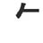

KANJIDAMAGE
Intro
Kanji facts
How to
Tags
Kanji
Radicals
Appendix
Onyomi
Ill pairs
Dupes
Articles
Long short vowlels
Synonyms
Forum
|
← Previous
Number 469
Next →

rifle
(top radical)
PK
Used In
生
称
乾
朱
毎
遊
覧
臨
欠
旅
飾
気
矢
族
失
傷
塩
監
旗
施
年
 KANJIDAMAGE
KANJIDAMAGE
 Number
469
Number
469